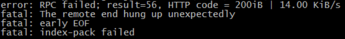
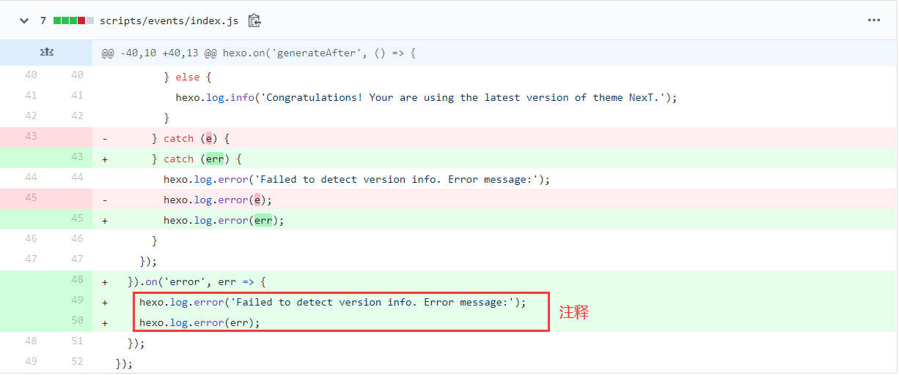

Windows下git clone慢的尝试解决方法
重启大法?! 重启网络，重启机器
科学上网
STILL SLOW
ERROR: PRC fail

git使用太多内存
- git使用太多内存，需要先
git gc
源代码过于庞大
http方式不行，可以用ssh的方式(首先要进行git ssh的配置)
需要修改git的http.postBuffer，加大git传输字节，仅对http形式有效
bash % 查看当前的配置
git config -l
% 加大httpbuffer
git config --global http.postBuffer 524288000
git config --global http.sslVerify false
修改host文件
通过查询ip地址
github.global.ssl.fastly.netgithub.comassets-cdn.github.com
位于
C:\Windows\System32\drivers\etc目录下的hosts文件按如下格式，在文件末尾写入
151.101.185.194 global-ssl.fastly.net
140.82.113.3 github.com刷新系统dns缓存
# 可在windows的cmd下
ipconfig /flushdnsip经常会变，如发现速度又下降了，及时去更换ip
git设置和取消代理
vpn的情况下
- 开全局代理的情况下，利用代理进行下载，对https有效，ssh无效
bash git config --global http.proxy http://127.0.0.1:自己的端口号
git config --global https.proxy https://127.0.0.1:自己的端口号
# 可以在计算机的设置->代理查看
# 取消方式
git config --global --unset http.proxy
git config --global --unset https.proxy
# 查看目前所有的配置
git config --global list - 使用全局代理，clone国内仓库慢，改进：只对github进行代理，对国内的仓库不影响
# 先取消全局代理，通过上面的取消方法
git config --global http.https://github.com.proxy https://127.0.0.1:自己的端口号
git config --global https.https://github.com.proxy https://127.0.0.1:自己的端口号
# 取消
git config --global --unset http.https://github.com.proxy
git config --global --unset https.https://github.com.proxy
关于git其他问题
参考资料
-
可能是：短时间过多请求api造成的
解决：
hexo\themes\next\scripts\events\index.js将作者修改的部分做注释
